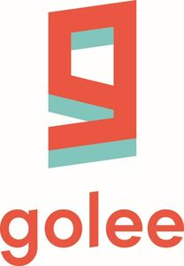

Trade Mark Journal No.2025/042 17 October 2025
WO0000001878823 (9,38,41,42,45)
Office of origin: San Marino
Date of International Registration:27 August 2025
Date of designation in the UK:
27 August 2025

- Class 9
- Software; software for social networking services via internet; computer software to enable the provision of information via the Internet.
- Class 38
- Providing telecommunications connections to a global computer network; providing internet chatrooms and online forums; video-on-demand transmission; transmission of digital files and electronic mail; providing access to databases.
- Class 41
- Providing recreation facilities; sporting services; sporting and cultural activities; providing information relating to recreational activities; entertainment services; organization of sports competitions.
- Class 42
- Design of online social networking software; installation of computer software; software development; platform as a service [PaaS]; software as a service [SaaS]; technical writing; maintenance of databases; development of databases; development of computer platforms.
- Class 45
- Online social networking services.
GLE HOLDING SB S.R.L.
Representative: Marco Montebelli, C/O Brema S.r.l.,, Piazza E. Enriquez, 22/c, 47891 Dogana, SAN MARINO